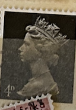
| SOURCE | TITLE| IMAGE MATCH | click to source page |
| eBay | UK - 1967 - Definitives - Queen Elizabeth II - 4D - #2568 | eBay | 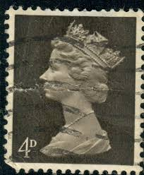 |
| commonwealthstamps.com | Great Britain 1967 Queen Elizabeth II Pre Decimal Machin SG 731 Fine Mint | 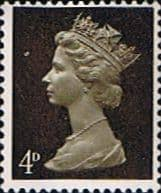 |
| eBay | 75p Denomination British Elizabeth II Stamps for sale | eBay | 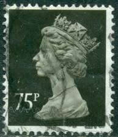 |
| eBay UK | UK - 1967 - Definitives - Queen Elizabeth II - 4D - #2570 | eBay UK | 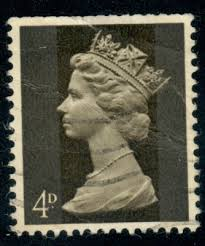 |
| allnumis.com | 4D 1967 - Machin Queen Elizabeth II, duplicates - ZZ. Duplicates - Stamp - 7460 | 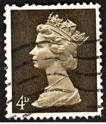 |
| Collect GB Stamps | British Stamps for 1968 : Collect GB Stamps | 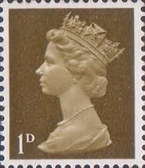 |
| allnumis.com | 4 d 1967 - Queen Elizabeth II, 1967 - Great Britain - Stamp - 5648 | 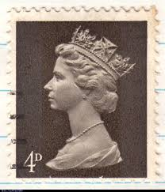 |
| eBay | 4d Denomination British Stamps for sale | eBay | 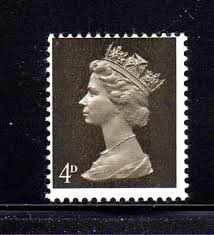 |
| Colnect | Briefmarke: Queen Elizabeth II - 4d Predecimal Machin (Großbritannien(Königin Elisabeth II. - vordezimal Machin) Mi:GB 456,Sn:GB MH6,Yt:GB 475,Sg:GB 731,AFA:GB 456,Un:GB 475d 📮 |  |
| Mystic Stamp Company | MH18//21 - 1969 Great Britain - Mystic Stamp Company |  |
| Dreamstime.com | A Vintage Queen Elizabeth II Postage Stamp from Great Britain. Editorial Photo - Illustration of england, symbol: 330177346 | 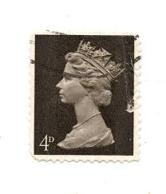 |
| Colnect | Stamp: Queen Elizabeth II - 4d Predecimal Machin (United Kingdom of Great Britain & Northern Ireland(Queen Elizabeth II - Predecimal Machin) Mi:GB 456ycm uu,Yt:GB 475a,Sg:GB 732,Un:GB 475a 📮 | 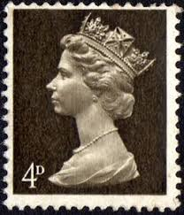 |
| stu1967 | 1977 HIGH VALUE MACHINS | 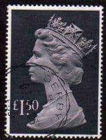 |
| Alamy | UNITED KINGDOM - CIRCA 1970: An English One Pound Used Postage Stamp showing Portrait of Queen Elizabeth 2nd, circa 1970 Stock Photo - Alamy | 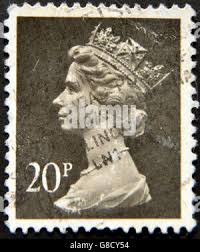 |
| Alamy | Constitutional monarch hi-res stock photography and images - Alamy | 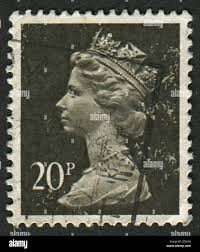 |
| HipStamp | UK MH6: 4d Queen Elizabeth II, Machin, used, VF | Great Britain, Back of Book (Other) - Machin Head Stamp / HipStamp | 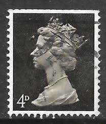 |
| thedoghouse.se | Queen Elizabeth Stamp DDR Block30 (Complete.Issue) Unmounted Mint/Never Hinged... Queen Elizabeth Stamps | 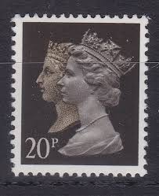 |
| Colnect | Francobolli: Queen Elizabeth II - 4d Predecimal Machin (Regno Unito di Gran Bretagna(Regina Elisabetta II pre decimali Machins) Mi:GB 456,Sn:GB MH6,Yt:GB 475,Sg:GB 731,AFA:GB 456,Un:GB 475d 📮 | 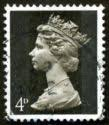 |
| Shutterstock | United Kingdom Circa 1975 Stamp Printed Stock Photo 328166723 | Shutterstock | 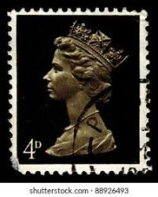 |
| eBay UK | missing phosphor products for sale | eBay UK | 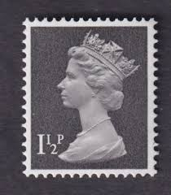 |
| collectorsclub.org | THE MACHIN SERIES: 1971-1993 | 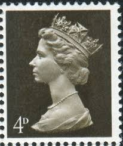 |
| Shutterstock | Wales Stamps: Over 760 Royalty-Free Licensable Stock Photos | Shutterstock | 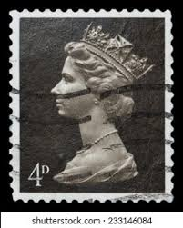 |
| HipStamp | Great Britain #624 1 1/2P Elizabeth, used EGRADED VF-XF 85 | Great Britain, General Issue Stamp / HipStamp |  |
| Alamy | Machin stamp 1967 hi-res stock photography and images - Alamy | 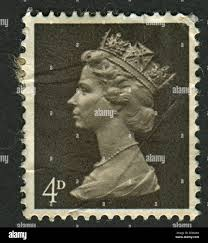 |
| Alamy | Queen Elizabeth II, Machin series, postage stamp, UK Stock Photo - Alamy | 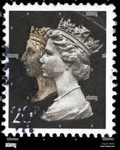 |
| commonwealthstamps.com | Queen Elizabeth II Decimal Machins 1971 - 1996 | 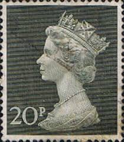 |
| There are a number of these on Ebay for silly money are these just just chancers or is the stamp something another group did say there 10p to a pound . Thanks. | 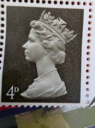 | |
| IG Stamps | SG732 4d Deep Olive Brown Centre Band Pre Decimal Machin Stamps | 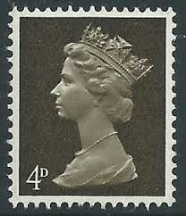 |
| BB Stamps | Penny Black Double Heads – Great British Stamps 1840 to DATE. Mint & Used GB Stamps | 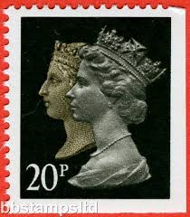 |
| Shutterstock | 83+ Thousand Golden Jubilee Queen Elizabeth Ii Royalty-Free Images, Stock Photos & Pictures | Shutterstock | 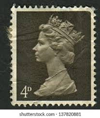 |
| HipStamp | UK 1990, used 20p Machin, Scott # MH193, Queen Victoria and Queen Elizabeth II | Great Britain, Back of Book (Other) - Machin Head Stamp / HipStamp | 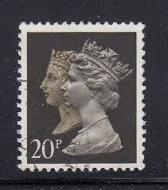 |
| HipStamp | Great Britain Queen Elizabeth II, The Machins | Great Britain, Back of Book (Other) - Machin Head Stamp / HipStamp | 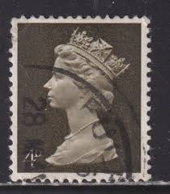 |
| commonwealthstamps.com | Great Britain 1977 High Values SG 1026b Fine Used | 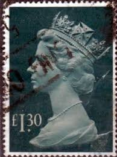 |
| MachinStamps.co.uk | Listings from 'ianlasoksmith' - Page 47 of 46 - 10 items per page - Highest Price First | Machin Stamps | 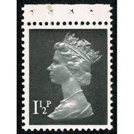 |
| IG Stamps | Double Head Machin Stamps | 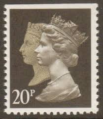 |
| Heritage Stamps | Heritage Stamps | Rare and Collectable Stamps | 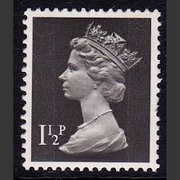 |
| HipStamp | Great Britain #629 4P Queen Elizabeth 2, Stamp used VF | Great Britain, General Issue Stamp / HipStamp | 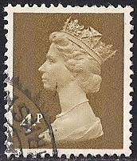 |
| Shutterstock | 4,972 Postage Stamp Machine Royalty-Free Images, Stock Photos & Pictures | Shutterstock | 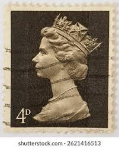 |
| HipStamp | Great Britain, Scott #MH254, used(o), 1999, Machin: Queen Elizabeth II. 19p | Great Britain, Back of Book (Other) - Machin Head Stamp / HipStamp | 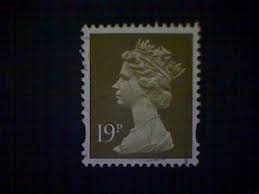 |
| Alamy | Machin stamp hi-res stock photography and images - Page 2 - Alamy |  |
| Collect GB Stamps | British Stamps for 1971 : Collect GB Stamps | 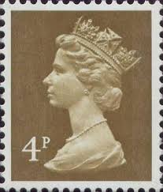 |
| IG Stamps | SG1447 1st Class Black NVI Machin Stamp Imperf at Top PCP Harrison | 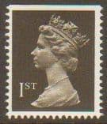 |
| HipStamp | Great Britain #MH193 20p Queen Victoria and Queen Elizabeth II | Great Britain, General Issue Stamp / HipStamp | 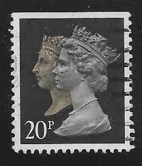 |
| Alamy | UNITED KINGDOM - CIRCA 1990: An English Used First Class Postage Stamp showing Two Portrait of Queen Elizabeth and Queen Victoria in gold circa 1990 Stock Photo - Alamy | 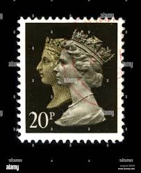 |
| eBay | Rushstamps | eBay Stores | 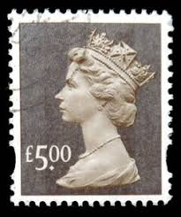 |
| Shutterstock | 85+ Thousand Queen Elizabeth Ii Third Portrait Royalty-Free Images, Stock Photos & Pictures | Shutterstock | 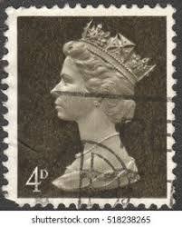 |
| eBay | 20p British Stamps for sale | eBay | 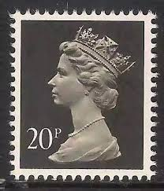 |
| Linns Stamp News | Machins retain consistency over 50 years amid continual change | 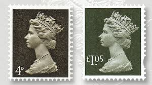 |
| John Rice Stamps | Machin definitives 'Y' numbers.(LITHO & RECESS printings) Stamps - Vintage stamps for sale |  |
| eBay | Great Britain Queen Elizabeth II 1968 stamp (#2B) | eBay | 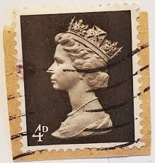 |
| Alamy | Great Britain Postage Stamp - Pre-decimal Queen Elizabeth II Stock Photo - Alamy | 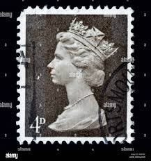 |
| Springfield Stamp Club | The Machin Era 1967-2022 — Springfield Stamp Club | 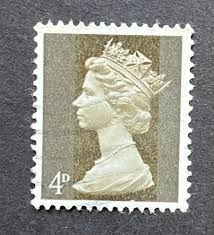 |
| HipStamp | Great Britain, Scott #MH67, used(o), 1976, Machin: Queen Elizabeth II, 9p | Great Britain, Back of Book (Other) - Machin Head Stamp / HipStamp |  |
| PicClick UK | 1971 SG X851 2½p magenta (1 centre band) Fine Used £0.99 - PicClick UK | 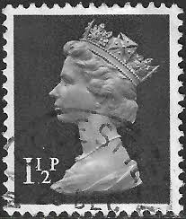 |
| Todocolección | reino unido: nuevo, international stamp exhibit - Buy Antique stamps of United Kingdom on todocoleccion | 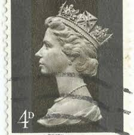 |
| Shutterstock | 6 1971h Royalty-Free Images, Stock Photos & Pictures | Shutterstock | |
| Shutterstock | Royal Letters: Over 19,920 Royalty-Free Licensable Stock Photos | Shutterstock | |
| Stamps.org | 2019 Summer Seminar on Philately Fundamentals of the British Machin Series | |
| eBay UK | Uncertified 1 Number British Elizabeth II Stamps for sale | eBay UK |